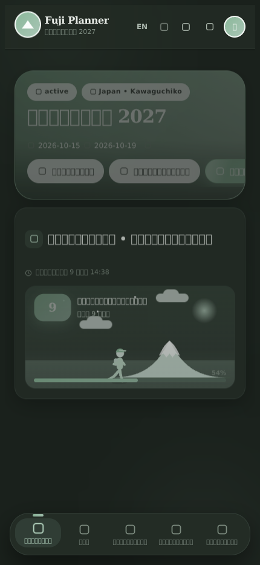
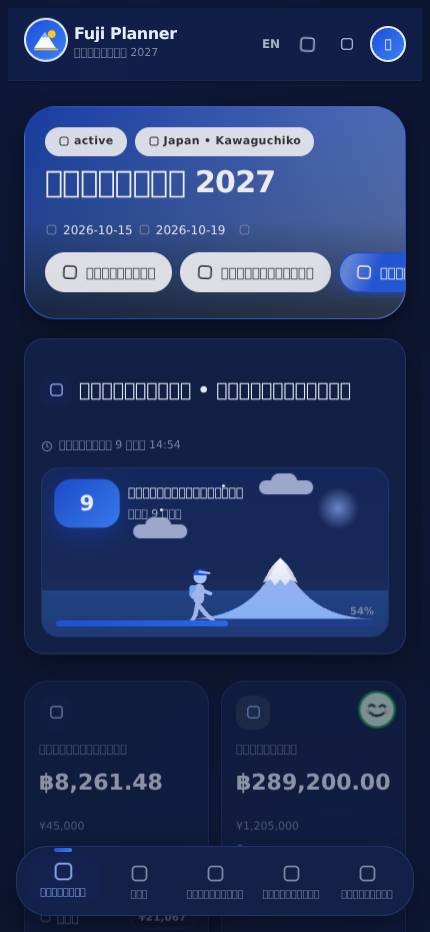
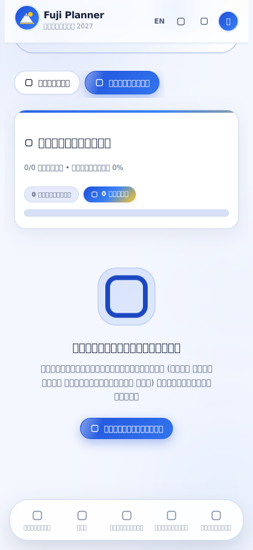
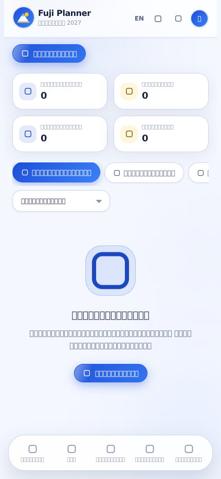
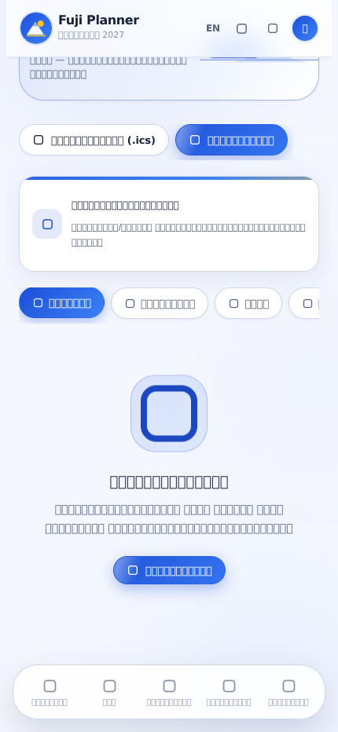
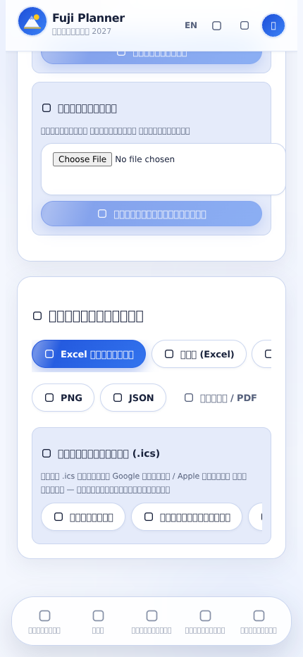
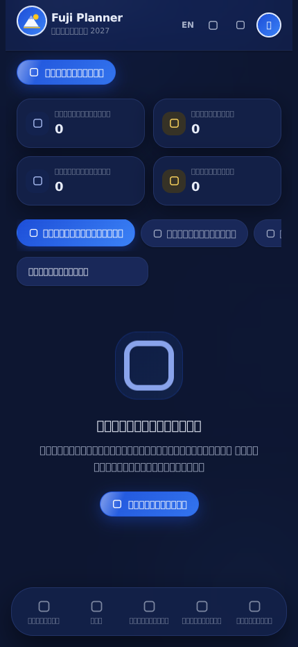
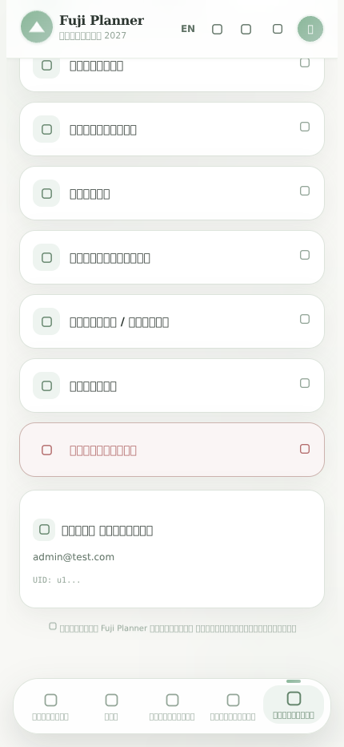

1 ชุดสี: จาก “เลือกได้ 12 ธีม” → “True tone” เดียว (น้ำเงิน + เหลือง)
ตัวเลือกชุดสีเดิม (Sage / Sakura / Ocean Mist / Aurora … 12 แบบ) ถูกถอดออกทั้งหมด เหลือพาเลตต์เดียวที่ล็อกกับแบรนด์ และเหลือให้เลือกแค่ สว่าง / มืด / อัตโนมัติ




color-mix() จึงอ่านง่ายทั้งสองโหมดพาเลตต์ที่ใช้จริง
#1d4ed8
True Blue
True Blue
#3b82f6
gradient end
gradient end
#ffc81e
accent
accent
#17203a
brand ink
brand ink
#0b1020
dark bg
dark bg
| กติกาที่ตั้งไว้ | เหตุผล |
|---|---|
| ห้ามใช้ตัวอักษรสีขาวบนเหลืองทึบ | เหลืองอมส้ม #ffc81e ตัดกับขาวแล้วอ่านไม่ออก → ใช้ --on-accent #2b2100 |
ข้อความน้ำเงินบนพื้นสว่างใช้ --primary-strong | ให้ค่า contrast ผ่าน AA โดยไม่ต้องเปลี่ยนสีแบรนด์ |
| เหลืองเป็น “คู่หู” ไม่ใช่สีหลัก | ใช้เน้น (ริบบิ้น, ป้าย, ปุ่ม accent, หลอดความคืบหน้า) ไม่ทาเต็มหน้าจอ |
| สีที่ยังต้องมีหลายสี (หมวดค่าใช้จ่าย, สีประจำวัน, สีสมาชิก) | เปลี่ยนจากพาสเทลเดิมมาเป็นตระกูลเดียวกับแบรนด์ (ดูข้อ 3) |
2 ฟังก์ชันใหม่รอบนี้ (เทียบกับ Wanderlog)
เทียบกับ wanderlog.com (ดึงหน้าเว็บจากในเครื่องไม่ได้ ใช้ชุดฟีเจอร์ที่เป็นที่รู้จักของเขาเป็น checklist) — ที่มีอยู่แล้ว: แผนเที่ยว, แผนที่, รูปสถานที่, หารค่าใช้จ่าย, เอกสาร, Excel — ที่ยังขาดและเพิ่มรอบนี้: เช็กลิสต์, กระดานโหวตสถานที่, ระบบจอง, ปฏิทิน .ics, พยากรณ์อากาศ, จัดลำดับเส้นทาง

/trip/:id/prep — เช็กลิสต์ของที่ต้องเตรียม + สิ่งที่ต้องทำ
มีเทมเพลตสำเร็จรูป 6 แบบ (เขตร้อน/หนาว/เมือง/แคมป์, ก่อนออกเดินทาง, เอกสาร, ความปลอดภัย)
ติ๊กแล้วบันทึกทันที ระบุผู้รับผิดชอบรายชิ้นได้ ทุกคนในทริปเห็นตรงกัน
/trip/:id/ideas — ใครก็เสนอสถานที่ได้ ทุกคนโหวต
เรียงตามคะแนน/ใหม่สุด/ราคา และปุ่ม “เพิ่มเข้าแผน” ที่เขียนเป็นรายการในแผนเที่ยวจริง ๆ ให้เลย
/trip/:id/bookings — เที่ยวบิน/โรงแรม/รถไฟ/ร้านอาหาร/รถเช่า
เก็บรหัสยืนยัน (มีปุ่มคัดลอก), ที่นั่ง, ค่าใช้จ่าย, เวลาเช็คอิน และการ์ด “การจองถัดไป” นับถอยหลัง


| สิ่งที่เพิ่ม | อยู่ตรงไหน | ข้อมูลเก็บที่ |
|---|---|---|
| เช็กลิสต์ + เทมเพลต 6 แบบ + ผู้รับผิดชอบรายชิ้น | /trip/:id/prep | trips/{id}/checklists |
| กระดานไอเดีย + โหวต + เพิ่มเข้าแผน | /trip/:id/ideas | trips/{id}/ideas |
| การจอง 7 ประเภท + รหัสยืนยัน + คัดลอก | /trip/:id/bookings | trips/{id}/reservations |
| ส่งออกปฏิทิน .ics (แผน / การจอง / ทั้งทริป) | หน้า Export + หน้าการจอง | ไฟล์ในเครื่องผู้ใช้ |
| พยากรณ์อากาศ (Open-Meteo, แคช 3 ชม., ไม่พังเวลาเน็ตหลุด) | แดชบอร์ด + หัววันในแผนเที่ยว | ไม่เก็บ (ดึงสด) |
| จัดลำดับเส้นทางต่อวัน (ก่อน → หลัง กม.) | ปุ่มในแผนเที่ยว | เขียนทับ order ของแผน |
3 งานสีที่ตามเก็บให้หมด + ของที่พังและแก้ไป
สีที่ยังค้างจากธีมเดิม
| จุด | เดิม | ใหม่ |
|---|---|---|
| สีเริ่มต้นของสมาชิกใหม่ | เขียว #8bb89a | น้ำเงิน #1d4ed8 |
| ตัวเลือกสีหมวดค่าใช้จ่าย | พาสเทล 12 สี | ตระกูลแบรนด์ 12 สี |
| สีหมวดเริ่มต้น 9 หมวด | พาสเทลเดิม | แมปกับแบรนด์/คู่สีที่กลมกลืน |
| เส้นบอกตำแหน่งในตัวครอปรูป | เขียวเดิม | น้ำเงินแบรนด์ |
| คอนเฟตตี/ตกแต่ง | ม่วง-เขียว-ชมพู | น้ำเงิน-เหลือง-ฟ้า |
บั๊กที่เจอตอนตรวจงาน (แก้แล้ว)
| อาการ | สาเหตุ |
|---|---|
| ลากสลับลำดับแผน / จัดเส้นทาง ใช้ไม่ได้ในวันที่จุดแรกไม่มีเวลา | recalculateSchedule โยน error First item must have startAt — แก้ให้คงเวลาที่มีอยู่และไม่พัง |
| จัดลำดับเส้นทางไม่เห็นพิกัดเลย | ตัวคำนวณรองรับแต่พิกัดแบบ object แต่ข้อมูลจริงเก็บเป็นสตริง "lat,lng" — เพิ่มตัวแปลง coordOf() |
| กดจัดลำดับแล้วขึ้นว่า “ดีอยู่แล้ว” ตลอด | ของเดิมย้ายจุดที่มีเวลาทั้งหมดไปท้ายวัน ทำให้เส้นทางยาวขึ้น (40 กม. → 120 กม.) แล้วถูกยกเลิก — เขียนใหม่เป็นจัดเฉพาะช่วงที่ไม่ติดเวลา และยอมแพ้ถ้าไม่ดีขึ้น |
| ลบทริปแล้วข้อมูลใหม่ค้างอยู่ | รายการ checklists / ideas / reservations ไม่ได้อยู่ในลิสต์ลบของทริป |
4 ยืนยันว่าของเดิมยังทำงาน
| ชุดทดสอบ | คำสั่ง | ผลล่าสุด |
|---|---|---|
| ยูนิตเทสต์ (ไม่ใช้เบราว์เซอร์) | node tests/node-runner.mjs | 62 ผ่าน / 0 ตก |
| Smoke test ทั้งแอป (DOM จริง, Firebase ปลอม) | node tests/smoke/run.mjs | ผ่านทั้งหมด, ไม่มี error หลุด |
| เช็คหน้าจอมือถือด้วย Chromium จริง | node tests/browser/mobile-check.mjs | ผ่านทุกหน้า iPhone 16/14 Pro Max/SE + เดสก์ท็อป (รวมโหมดมืด) |
หมายเหตุ: การสลับ สว่าง/มืด/อัตโนมัติ ยังอยู่ครบ (ตามที่ตกลง) — ที่ถูกถอดคือ “การเลือกชุดสี” เท่านั้น
และสีของทริป (themeColor) เดิมยังอยู่ในฐานข้อมูลแบบอ่านไม่ใช้ ไม่ได้ลบข้อมูลใคร